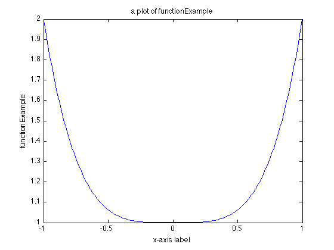
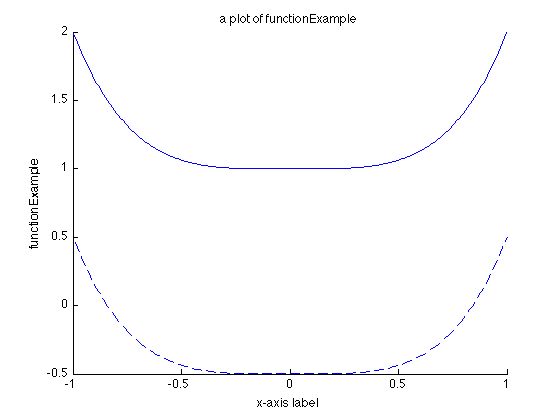

Multiple Plots
Contents
The easist way to compare two or more figures is to overplot them on the same figure. Let's try to call functionExample with different input:
x = linspace(-1,1,200); y1 = 1; y2 = -0.5; out1 = functionExample(x, y1); out2 = functionExample(x, y2);
We can plot out1 first:
figure(1); clf; plot(x, out1); xlabel('x-axis label'); ylabel('functionExample'); title('a plot of functionExample');
To overplot another curve on the original one, remember to use
hold on;
so the next plot command won't clean up the previous plot command. Then you can draw another curve
plot(x, out2)
Now there's a problem: how can we tell which line is which? Here we introduce the third parameter of plot command, which is used to specify a color and/or point marker type.
Line Specification
To make the overplotted figure easier to read, you may want to change the line specification, e.g. line style, color, and line width. Here are some examples:
1) Change the line style
figure(1); clf; hold on; plot(x, out1) plot(x, out2, '--') xlabel('x-axis label'); ylabel('functionExample'); title('a plot of functionExample');
2) Change the color:
figure(1); clf; hold on; plot(x, out1, 'k') plot(x, out2, 'c') xlabel('x-axis label'); ylabel('functionExample'); title('a plot of functionExample');
3) Change the line width:
figure(1); clf; hold on; plot(x, out1, 'LineWidth', 2) plot(x, out2) xlabel('x-axis label'); ylabel('functionExample'); title('a plot of functionExample');
You can type
help plot
PLOT Linear plot.
... ...
Various line types, plot symbols and colors may be obtained with
PLOT(X,Y,S) where S is a character string made from one element
from any or all the following 3 columns:
b blue . point - solid
g green o circle : dotted
r red x x-mark -. dashdot
c cyan + plus -- dashed
m magenta * star (none) no line
y yellow s square
k black d diamond
w white v triangle (down)
^ triangle (up)
< triangle (left)
> triangle (right)
p pentagram
h hexagram
... ...
in the Command Window to find more options. Note that the default value is blue solid line ('b-')
Graph Legend
When there are more than one line, you'll need to include graph legend for lines to remind yourself which one represents what data set. The syntax is simple:
legend('y = 1', 'y = -0.5', 'Location', 'NorthEastOutside');
Note that we wrote y = 1 first because we plotted out1 first. The last parameter ('Location') gives the specified location of the legend box ('NorthEastOutside') with respect to the axes. You can type
help legend
LEGEND Display legend.
LEGEND(string1,string2,string3, ...) puts a legend on the current plot
using the specified strings as labels. LEGEND works on line graphs,
bar graphs, pie graphs, ribbon plots, etc. You can label any
solid-colored patch or surface object. The fontsize and fontname for
the legend strings matches the axes fontsize and fontname.
... ...
in the Command Window to see more options.